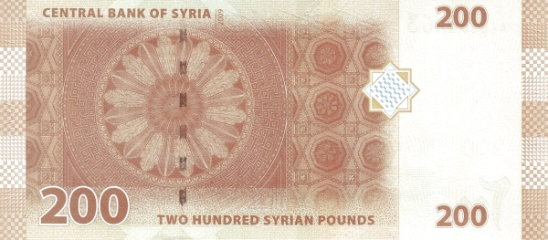

Сирия - Сирийский фунт
50 фунтов
Лицевая сторона - клинописные таблички из Эблы
Обратная сторона - библиотека им. Хафеза аль-Асада, памятник Х. Асаду в Дамаске
100 фунтов
Лицевая сторона - античный амфитеатр и арка в Босре
Обратная сторона - сооружение из мечети Омейядов в Дамаске, здание Центрального банка Сирии, древняя монета
200 фунтов
Лицевая сторона - нории из Хамы на реке Оронт
Обратная сторона - потолок храма Баала в Пальмире
500 фунтов
Лицевая сторона - здание оперного театра в Дамаске
Обратная сторона - фреска с изображением музыкантов, глиняная табличка
1000 фунтов
Лицевая сторона - античный амфитеатр в Босре
Обратная сторона - древнеримская мозаика из Эс-Сувайды, ветви оливы
2000 фунтов
Лицевая сторона - мечеть Омейядов в Дамаске, портрет президента Башара Асада
Обратная сторона - интерьер Народного совета Сирии